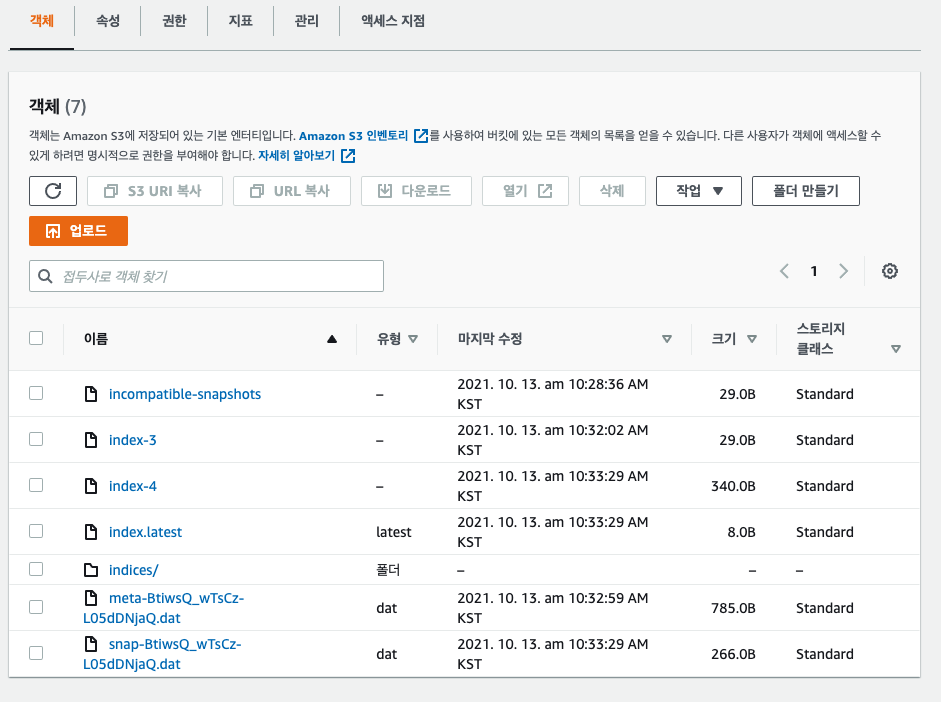

About Author

json
blog: https://kr1json.github.io
twitter: @kr1json
github: kr1json
facebook: kr1json
잊기전에 써봅니다.
About this Article
Date Released:
Friday, October 15, 2021 4:33 PMOpenSearch Service 스냅샷 S3 백업 복원하는 방법

운영하던 서비스의 데이터를 AWS의 OpenSearch Service에 저장하고 있었는데 상당기간 동안 운영하며
정보수집의 목적을 이루어 값비싼 OpenSearch Service는 삭제하고 데이터만 백업하기로 했습니다.
OpenSearch Service?
AWS의 ElasticSearch Service의 이름이 OpenSearch Searvice로 변경되었습니다.
작업은 아래 순서로 이루어 집니다.
사용자는 이미 존재하는걸 사용하고 S3와 Role만 새로 만들었습니다.
아시다시피 OpenSearch는 REST API를 사용하는데 스냅샷 저장공간 만드는 REST는 AWS 인증이 필요하여 POSTMAN이나 파이썬같은걸 사용합니다.
저는 익숙한 Nodejs를 사용하였습니다.
사전작업
- 스냅샷 저장할 S3 버킷 만들기
- IAM 사용자 만들기 ( AWS 프로그래밍 방식 엑세스 가능 )
- IAM Role 만들기 및 권한 추가
실제작업
- OpenSearch에 스냅샷 저장공간 만들기 ( nodejs 사용 )
- 스냅샷 저장
사전작업
IAM Role 만들기
- Role 이름 : TheSnapshotRole
- 역할의 권한에 적용할 정책 : 생성한 S3의 권한을 추가합니다.
{
"Version": "2012-10-17",
"Statement": [
{
"Action": [
"s3:ListBucket"
],
"Effect": "Allow",
"Resource": [
"arn:aws:s3:::s3-bucket-name"
]
},
{
"Action": [
"s3:GetObject",
"s3:PutObject",
"s3:DeleteObject"
],
"Effect": "Allow",
"Resource": [
"arn:aws:s3:::s3-bucket-name/*"
]
}
]
}
- 권한 추가 : 스냅샷 저장소를 만들려면 OpenSearch에
TheSnapshotRole역할을 전달하고 ESHttpPut 권한이 있어야 합니다.
{
"Version": "2012-10-17",
"Statement": [
{
"Effect": "Allow",
"Action": "iam:PassRole",
"Resource": "arn:aws:iam::123456789012:role/TheSnapshotRole"
},
{
"Effect": "Allow",
"Action": "es:ESHttpPut",
"Resource": "arn:aws:es:region:123456789012:domain/domain-name/*"
}
]
}
실제 작업
OpenSearch Service에 스냅샷 레포지토리를 등록하고 스냅샷을 생성합니다.
스냅샷 레포지토리 등록
원래는 아래와 같은 REST API를 호출하면 되는데 AWS 인증을 해야해서 curl로 작업이 안됩니다.
PUT domain-endpoint/_snapshot/my-snapshot-repo-name
{
"type": "s3",
"settings": {
"bucket": "s3-bucket-name",
"region": "region",
"role_arn": "arn:aws:iam::123456789012:role/TheSnapshotRole"
}
}
그래서 python이나 postman을 사용하는데 저는 nodejs 를 사용했습니다.
/**
* Created by kr1json
* Date: 2021/10/12
* Time: 4:26 오후
*/
const https = require('https');
const aws4 = require('aws4');
function request(opts) {
https.request(opts, function (res) {
res.pipe(process.stdout);
}).end(opts.body || '');
}
request(aws4.sign({
service: 'es',
host: 'domain-endpost',
region: 'ap-northeast-2',
method: 'PUT',
path: '/_snapshot/S3-bucket-name',
headers: { 'Content-Type': 'application/json' },
body: JSON.stringify({
'type': 's3',
'settings': {
'bucket': 'S3-bucket-name',
'region': 'ap-northeast-2',
'role_arn': 'arn:aws:iam::123456789012:role/TheSnapshotRole'
}
})
},
{ accessKeyId: 'accessKeyId', secretAccessKey: 'secretAccessKey' }
));
성공적으로 등록하면 아래와 같이 응답이 옵니다.
{
"acknowledged": true
}
실패 했다면 권한 설정 문제일 가능성이 제일 큽니다.
레포지토리 등록 확인
curl -XGET 'domain-endpoint/_snapshot'
스냅샷 생성
이제 진짜 스냅샷을 생성합니다.
curl -XPUT 'domain-endpoint/_snapshot/repository-name/snapshot-name'
스냅샷 확인
curl -XGET 'domain-endpoint/_snapshot/repository-name/_all?pretty'
S3에도 제대로 저장이 되었는지 확인해봅니다.

복구
복구는 만들어 놓은 Role이 있기 때문에 금방합니다.
- OpenSearch Service에 도메인을 만들기
- 레포지토리 등록
- OpenSearch 복구 요청
curl -XPOST 'domain-endpoint/_snapshot/repository-name/snapshot-name/_restore'
- 출처
AWS OpensSearch 문서 : Creating index snapshots in Amazon OpenSearch Service